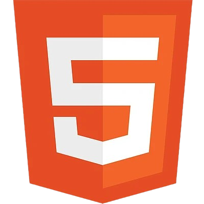
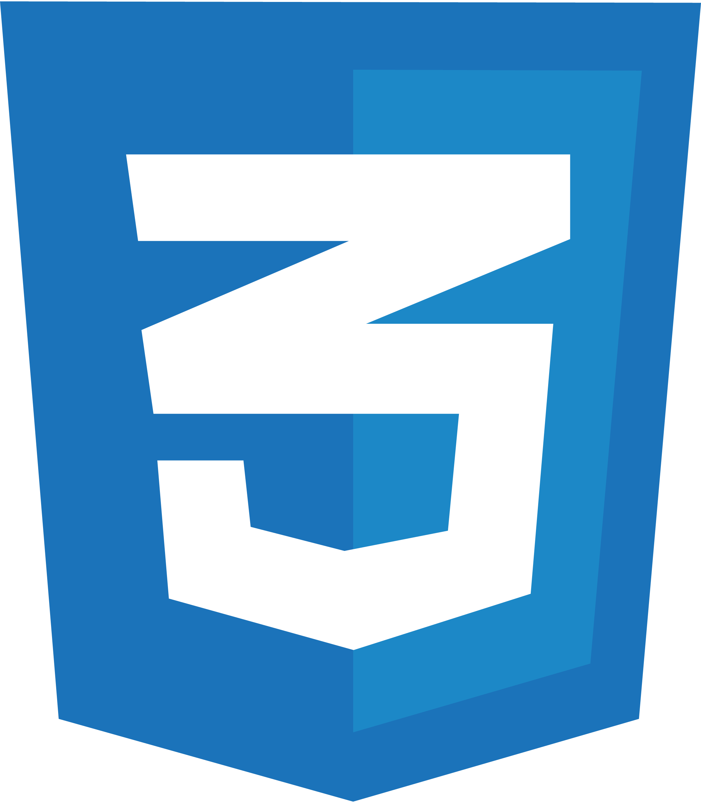
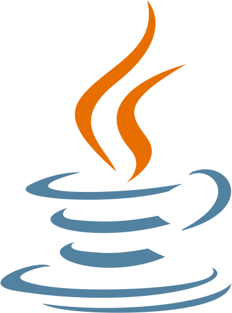

HTML

HTML é a linguagem de marcação padrão para criar páginas da web.
CSS

CSS é a linguagem de estilização utilizada para documentos HTML.
Java

Java é uma linguagem de programação, orientada a objetos e amplamente utilizada para desenvolvimento de aplicações.
Python

Python é uma linguagem de programação, amplamente utilizada em diversas áreas, como desenvolvimento web, ciência de dados e automação.
SQL
SQL (Structured Query Language) é uma linguagem de programação utilizada para gerenciar e manipular bancos de dados relacionais.